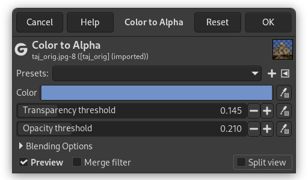

O comando Cor para Alfa deixa transparentes todos os pixels da camada ativa que possuem a cor selecionada. Ele tenta preservar a informação de antisserrilhamento usando um algoritmo parcialmente inteligente que substitui informação de cor fraca com informação de alfa fraca. Dessa forma, áreas que contêm um elemento da cor selecionada mantêm uma aparência misturada aos pixels do entorno.
- Predefinições, Opções de Mistura, Preview, Merge filter, Split view
-
![[Nota]](images/note.png)
Nota These options are described in Seção 8.1.2, “Funcionalidades Comuns de Cores”.
- Cor
-
Clicar na amostra de cor providencia um diálogo de seleção de cor para que você escolha uma. Você também pode selecionar uma cor usando o conta-gotas à direita.
“Color to alpha” comes with a GEGL option dialog under Toolbox. When the Sample average option is unchecked, color picker picks only one pixel color. When the option is checked, mouse pointer goes with a square limiting a pixel sample that determines a merged sample “color”. You can fix the square size directly in the slider, or using the + and - buttons, or the Up and Down keyboard keys.
Clicar com o botão direito na amostra de cor exibe um menu onde você pode selecionar as cores Frente e Fundo, Branco ou Preto.
- Transparency threshold, Opacity threshold
-
-
Transparência: o limite abaixo do qual cores se tornam transparentes.
-
Opacidade: o limite acima do qual as cores se tornam opacas.
Cor para Alfa modifica a transparência (e cor) dos pixels baseado na sua distância da cor de fundo selecionada (a opção “Cor”) — quanto mais próximos estiverem da cor de fundo, mais transparentes ficarão, com a cor de fundo se tornando totalmente transparente.
Os limiares de transparência e opacidade controlam o quão próximas as cores devem estar da cor de fundo antes de se tornarem totalmente transparentes, e quão distantes elas devem estar da cor de fundo antes de permanecerem totalmente opacas, respectivamente. Com os valores padrão de 0 e 1, apenas a cor de fundo se torna totalmente transparente, e somente as cores mais distantes dela permanecem totalmente opacas.
Por exemplo, enquanto os valores padrão funcionam bem para remover um fundo branco de um objeto preto, se o objeto em vez disso for cinza [fig. 1], ele se tornará semi-transparente [fig. 2], uma vez que cinza é o meio-termo entre branco e preto. Baixar o limiar de opacidade para 0,5 corrige isso, mantendo todos os pixels que forem cinza ou mais escuros (todos os pixels cuja distância do branco for de 0,5 ou mais, numa escala [0,1]) totalmente opacos [fig. 3].
O limiar de transparência funciona de forma similar: aumentá-lo faz com que mais cores na vizinhança da cor de fundo se tornem totalmente transparentes. Isto é mais útil em imagens com muito ruído, nas quais o plano de fundo não é totalmente sólido. No entanto, diferentemente de outros casos, quando o limiar de transparência é maior que zero, recompor o resultado contra a cor de fundo não reproduzirá mais exatamente a mesma imagem.
Correndo o risco de ser um pouco técnico, isto pode ser visualizado pensando-se no cubo RGB. A cor de fundo é um ponto dentro do cubo, e os limiares de transparência e opacidade são dois sub-cubos centrados ao redor da cor de fundo. Tudo dentro do cubo do limiar de tranparência se torna totalmente transparente, tudo fora do cubo do limiar de opacidade permanece totalmente opaco, e tudo entre eles gradualmente transita de transparente para opaco. Na imagem [fig. 4] você pode ver a face Vermelho-Verde do cubo RGB. (1) é a cor de fundo (Vermelho = 0,5, Verde = 0,5, Azul = 0,0),(2) é o limiar de transparência (definido como 0,1) e (3) é o limiar de opacidade (definido como 0,4).
-


-
Adicione um canal alfa à sua imagem se necessário pelo menu da janela de imagem em → → .
-
Abra Cor para alfa.
Figura 16.229. Cor para alfa aberto com a opções padrão
Imagem original com canal alfa

Imagem original com um canal alfa. Cor para alfa com opções padrão: “Cor” é branco. Limiar de opacidade = 1,00 é o máximo, e então apenas as cores mais longes da “Cor” permanecem totalmente opacas. Limiar de transparência = 0 e então a “Cor” é totalmente transparente.
-
Desmarque a opção Pré-visualização.
-
Escolha a cor, aqui o céu.
-
Remarque a opção Pré-visualização.

“Color” from the sky. Default thresholds.
-
Adapte os limiares Transparência e Opacidade por meio de tentativa e erro.

Only the sky is transparent.

Opacity threshold was decreased to make farthest colors (monument, trees and road) fully opaque. Transparency threshold was increased to make “Color” fully transparent and delete some imperfections in the sky.